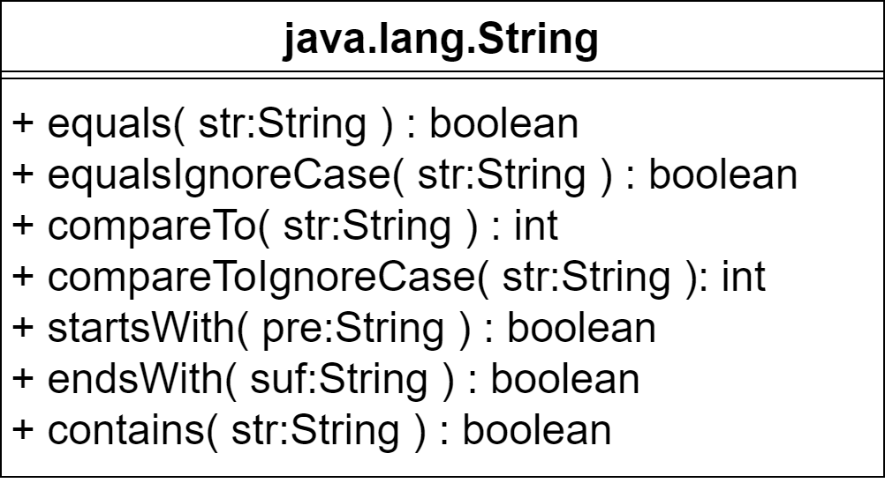
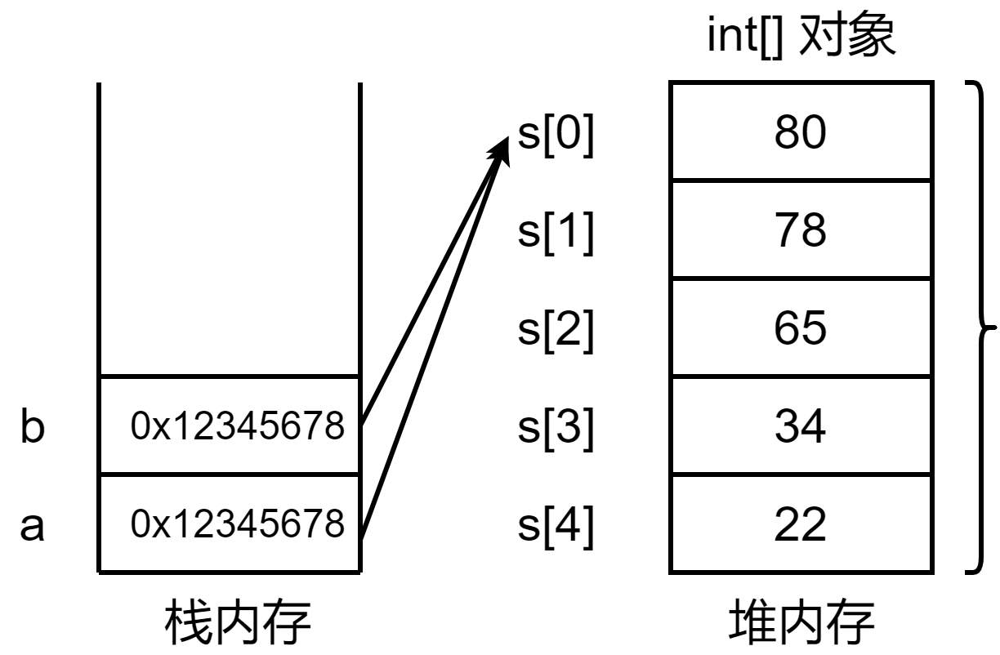

Java程序设计
第三章 数组和字符串(2)
字符串类(String)
- 一串字符，用双引号表示字符串常量，用String存储字符串常量
String s1 = "hello World!";
String s2 = new String( "Hello, World" );
String s1 = "Hello";
s1.length();
s1.charAt( 0 );//可将字符串理解为字符数组
"Hello World".length();
" hello ".trim();
String类常用方法(一)

String类常用方法(一)
- length()方法, 注意和数组的length属性区别
String str = "Welcome to Java";
System.out.println( "The length of " + str + " is " + str.length() );
String str = "Welcome to Java";
int index = 0;
System.out.println( "The " + index + "th character of " + str + " is " + str.charAt( index ) );
String类常用方法(一)
- toLowerCase和toUpperCase()方法，实现字符串的大小写转换
String s1 = "welcome";
String s2 = "WELCOME";
System.out.println( "s1 to upper case: " + s1.toUpperCase() );
System.out.println( "s2 to lower case: " + s2.toLowerCase() );
String s3 = "\t Good Night \n";
System.out.println( s3.trim() );
String s4 = " H E L L O ";
String[] strs = s4.split( " " );
for( String str:strs )
System.out.print( str );
从标准输入获取字符串和字符
- 输入字符串，利用Scanner类的next()和nextLine()方法
Scanner input = new Scanner( System.in );
String s1 = input.next();
String s2 = input.next();
String s3 = input.next();
System.out.println( "s1 + s2 + s3 is " + s1 + s2 + s3 );
System.out.print( "enter a line" );
String s = input.nextLine();
System.out.println( "s is " + s );
Scanner input = new Scanner( System.in );
String s = input.nextLine();
char ch = s.charAt( 0 );
System.out.println( "The character is " + ch );
String类常用方法(二)
String类常用方法(二)
- equals和equalsIgnoreCase方法，比较两个字符串内容是否相同
String s1 = "Welcome";
String s2 = "Welcome";
String s3 = "welcome";
System.out.println( s1.equals( s2 ) );
System.out.println( s1.equals( s3 ) );
System.out.println( s1.equalsIgnoreCase( s3 ) );
System.out.println( s1.compareTo( s2 ) );
System.out.println( s1.compareTo( s3 ) );
System.out.println( s1.compareToIgnoreCase( s3 ) );
String类常用方法(二)
- startsWith和endsWith方法，计算一个字符串是否以特定的字符串开头或结尾
System.out.println( s1.startsWith( "We" ) );
System.out.println( s1.startsWith( "we" ) );
System.out.println( s2.endsWith( "me" ) );
System.out.println( s1.contains( "lco" ) );
System.out.println( s1.contains( "LCO") );
String类常用方法(三)

String类常用方法(四)
- substring方法，获得字符串的子串，注意方法名的写法
String str = "Welcome to Java";
String substr1 = str.substring( 4 );
String substr2 = str.substring( 0, 11 ) + "HTML";
System.out.println( substr1 );
System.out.println( substr2 );
System.out.println( str.indexOf( 'W' ) );
System.out.println( str.indexOf( 'o' ) );
System.out.println( str.indexOf( 'o', 5 ) );
System.out.println( str.indexOf( "come" ) );
System.out.println( str.indexOf( "Java", 5 ) );
System.out.println( str.indexOf( "java", 5 ) );
System.out.println( str.lastIndexOf( 'W' ) );
System.out.println( str.lastIndexOf( 'o' ) );
System.out.println( str.lastIndexOf( 'o', 5 ) );
System.out.println( str.lastIndexOf( "come" ) );
System.out.println( str.lastIndexOf( "Java", 5 ) );
System.out.println( str.lastIndexOf( "java", 5 ) );
基本数据类型的包装类
针对八种基本数据类型，提供对应的包装类，用于实现类型间转换，如数字与字符串间的转换；也可作为参数传入相应方法，如各种泛型类方法，要求参数类型为Object类，基本数据类型无法传入
- byte → Byte
- char → Character
- short → Short
- int → Integet
- long → Long
- float → Float
- double → Double
- boolean → Boolean
基本数据类型的包装类
- 包装类和基本数据类型之间的转换，以int和integer为例
int n = 10;
Integer N = new Integer( n );
int m = N.intValue();
Integer N = 100; // 自动装箱，相当于new Integer(100)
int n = N; // 自动拆箱，相当于N.intValue();
字符串与数字间的转换
- 字符串与数值之间转换，可采用相应包装类的静态方法，以int和Integer为例
- 字符串转换为int，采用Integer.parseInt方法
String s = "1234";
int n1 = Integer.parseInt( s );
int n2 = Integer.parseInt( s, 10 );
int n3 = Integer.parseInt( s, 16 );
int n4 = Integer.parseInt( "0101", 2 );
Integer n1 = Integer.valueOf( s );
Integer n2 = Integer.valueOf( s, 16 );
Integer n3 = Integer.valueOf( "0101", 2 );
String s = Integer.toString( 1000 );
栈和堆
- 栈和堆都是内存中的区域，用于存放不同类型的数据
- 基本数据类型的值存储在栈中
- 引用数据类型的引用变量存储在栈中，具体的数据存储在堆中，由引用变量指向堆中的内容
- 凡用new生成的对象或数组，其变量名存储在栈中，其对象或数组的具体内容存储在堆中
栈和堆
==和equals
- 当用"=="进行比较时，比较的是存储在栈中存储的变量值
- 基本数据类型值可直接使用"=="进行比较
- 对引用数据类型，若使用“=="进行比较，比较的是引用数据类型对象的引用地址
- 对引用数据类型，使用equals方法进行比较，比较的是引用数据类型对象存储在堆中的具体内容
- 引用数据类型都有equals方法可进行比较，基本数据类型只能使用"=="进行比较
- EqualTest.java
字符串创建机制

字符串池机制
- 字符串池，在“堆”内存中，用于存储已创建的字符串对象
- 当调用String s="hello"时，首先在字符串池中寻找是否已存在此字符串，若有，就将其赋值给s变量(如何解释?)；若不存在，则在堆中新建一个字符串，记录其地址值，将其地址值赋值给变量s
String s1 = "hello";
String s2 = "hello";
String s3 = new String( "hello" );
System.out.println( "s1==s2? " + (s1==s2) + ", s1==s3? " + (s1==s3) );
System.out.println( "s1.equals(s2)? " + s1.equals( s2 ) + ", s1.equals(s3)? " + s1.equals(s3) );
字符串池机制(续)
- 字符串池中的字符串是常量，一经创建后不能改变其值
String s1 = "hello";
System.out.println( s1.hashCode() );
s1 = "hello2";
System.out.println( s1.hashColde() );
StringBuffer类
- String类对象实例是不可改变的，若要改变String对象本身的内容，可采用StringBuffer类
StringBuffer sb = new StringBuffer( "Hello" );
int i = 101;
sb.append( " " ).append( "World" ).append( i ); //可任意添加
String str = sb.toString();